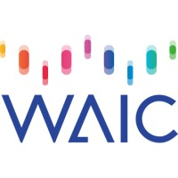

Try it
Download on the App Store (visionOS). Support for Meta Quest and PICO is planned.
Overview
STRUCTURALism is an innovative XR game 🕶️ that explores interactive spatial construction inspired by constructivist architecture 🏗️. The game allows players to manipulate and connect modular elements in a VR environment, emphasizing physics-driven interactions 🎯 and creative problem-solving.
This project is created as an homage to the beloved physics-based puzzle game World of Goo 🎮, reimagining its core mechanics for immersive XR experiences. Just as World of Goo challenged players to build structures with goo balls, STRUCTURALism invites users to construct spatial forms using modular elements in virtual reality.
Technologies Used
- Unity & XR Toolkit 🎮 – Game development and interaction mechanics
- NeRF & LiDAR 📡 – 3D model reconstruction for traditional Chinese architecture
- Physics-based Interaction ⚙️ – Real-time physics-driven ball connections
- Hand Gesture Recognition ✋ – Intuitive control through natural gestures
- OpenXR 🌍 – Cross-platform XR compatibility
Challenges and Solutions
🔴 Challenge: Precise Physics Simulation – Ensuring realistic connection and movement of elements.✅ Solution: Utilized Unity’s physics engine with custom constraints and damping adjustments.
🔴 Challenge: Gesture Recognition Accuracy – Distinguishing intended hand movements from noise.
✅ Solution: Implemented machine learning-based gesture classification for improved accuracy.
🔴 Challenge: Performance Optimization – Maintaining smooth frame rates in XR environments.
✅ Solution: Optimized rendering pipelines, reduced draw calls, and utilized GPU instancing.
Awards
Best Practice of RTE
Agora

Bronze Prize
Spatial Joy 2024

Invited Exhibitor
WAIC 2025
Dev Log
Follow the development journey and behind-the-scenes process of creating the STRUCTURALism XR game.
Basic Physics Effect Proof and Simulation
Explore the foundational physics simulation system that powers STRUCTURALism. This video demonstrates the core physics effects, collision detection, and realistic material behaviors that make the modular construction feel authentic and responsive.
Structure and Manipulation Mechanics Realization
Discover how the structural manipulation system was implemented in STRUCTURALism. This video covers the modular element connection mechanics, structural integrity calculations, and the intuitive manipulation tools that allow players to build complex spatial forms.
XR Interaction Adaptation and Optimization
Learn about the XR-specific adaptations and optimizations that make STRUCTURALism work seamlessly in virtual reality. This video covers hand tracking integration, spatial UI design, performance optimization for XR platforms, and the unique interaction paradigms that enhance the immersive building experience.
Full Development Playlist
Watch all development videos in sequence to follow the complete journey of creating STRUCTURALism, from initial physics experiments to final XR optimization.
Bilibili • Full Playlist